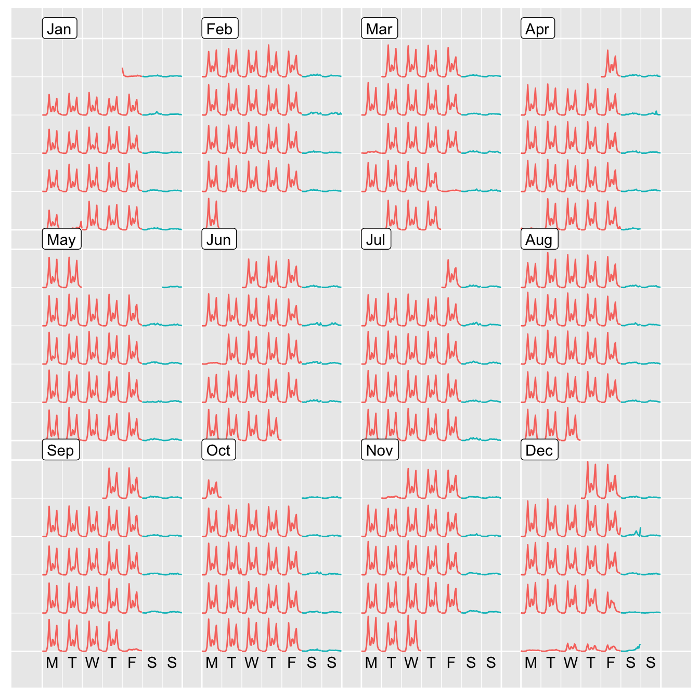

The goal of sugrrants is to provide supporting graphs with R for analysing time series data. It aims to fit into the tidyverse and grammar of graphics framework for handling temporal data.
Installation
You could install the stable version on CRAN:
You could also install the development version from Github using:
Usage
Calendar-based graphics
library(dplyr)
library(sugrrants)
calendar_df <- pedestrian %>%
filter(Sensor_ID == 9, Year == 2016) %>%
mutate(
Weekend = if_else(Day %in% c("Saturday", "Sunday"), "Weekend", "Weekday")
) %>%
frame_calendar(
x = Time, y = Hourly_Counts, date = Date, calendar = "monthly"
)
calendar_df
#> # A tibble: 8,780 x 13
#> Date_Time Date Year Month Mdate Day Time Sensor_ID
#> * <dttm> <date> <int> <ord> <int> <ord> <int> <int>
#> 1 2016-01-01 00:00:00 2016-01-01 2016 Janu… 1 Frid… 0 9
#> 2 2016-01-01 01:00:00 2016-01-01 2016 Janu… 1 Frid… 1 9
#> 3 2016-01-01 02:00:00 2016-01-01 2016 Janu… 1 Frid… 2 9
#> 4 2016-01-01 03:00:00 2016-01-01 2016 Janu… 1 Frid… 3 9
#> 5 2016-01-01 04:00:00 2016-01-01 2016 Janu… 1 Frid… 4 9
#> # ... with 8,775 more rows, and 5 more variables: Sensor_Name <chr>,
#> # Hourly_Counts <int>, Weekend <chr>, .Time <dbl>, .Hourly_Counts <dbl>p <- calendar_df %>%
ggplot(aes(x = .Time, y = .Hourly_Counts, group = Date, colour = Weekend)) +
geom_line() +
theme(legend.position = "bottom")
prettify(p, label.padding = unit(0.08, "lines"))
Google Summer of Code 2017
This package is part of the project—Tidy data structures and visual methods to support exploration of big temporal-context data, which has been participated in Google Summer of Code 2017 (gsoc), for R project for statistical computing.
A new function frame_calendar() [here and here] in the sugrrants package has been developed and documented for calendar-based graphics. I have also written a vignette [source and reader view], which introduces and demonstrates the usage of the frame_calendar() function. Many unit tests have been carried out to ensure the expected performance of this function. The function implements non-standard evaluation and highlights the tidy evaluation in action. The initial release (v0.1.0) of the package has been published on CRAN during the gsoc summer time.
I have initialised a new R package tsibble for tidy temporal data, as part of the project. The tsibble() function constructs a new tbl_ts class for temporal data, and the as_tsibble() helps to convert a few ts objects into the tbl_ts class. Some key verbs (generics) from the dplyr package, such as mutate(), summarise(), filter(), have been defined and developed for the tbl_ts data class. The tsibble package was highly experimental over the period of the gsoc [commits], and these functions are very likely to be changed or improved in the future.
A new package rwalkr has been created and released on CRAN during the gsoc summer. This package provides API to Melbourne pedestrian sensor data and arrange the data in tidy temporal data form. Two functions including walk_melb() and shine_melb(), have been written and documented as the v0.1.0 and v0.2.0 releases on CRAN. The majority of the code for the function run_melb() has been done, but the interface needs improving after the gsoc.
Miscellaneous
The acronym of sugrrants is SUpporting GRaphs with R for ANalysing Time Series, pronounced as “sugar ants” that are a species of ant endemic to Australia.
Please note that this project is released with a Contributor Code of Conduct. By participating in this project you agree to abide by its terms.